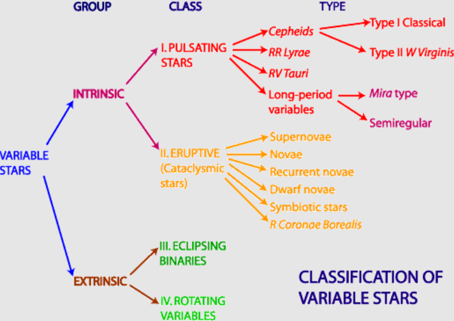
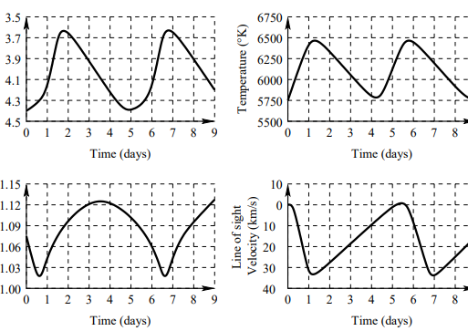
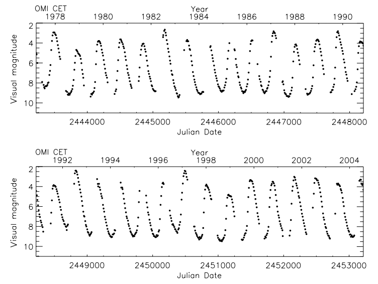
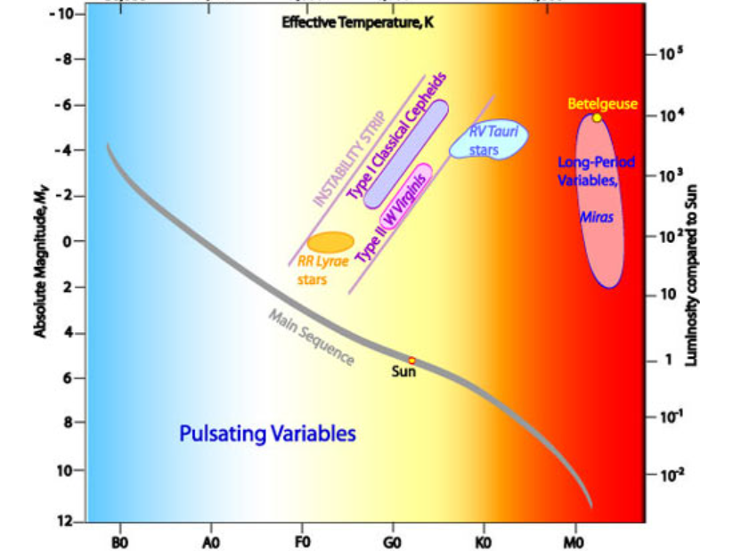
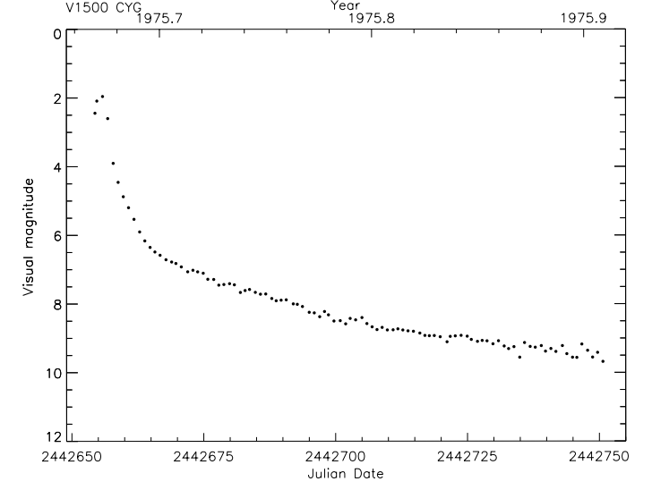
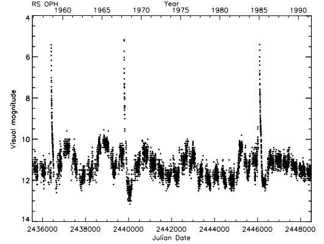
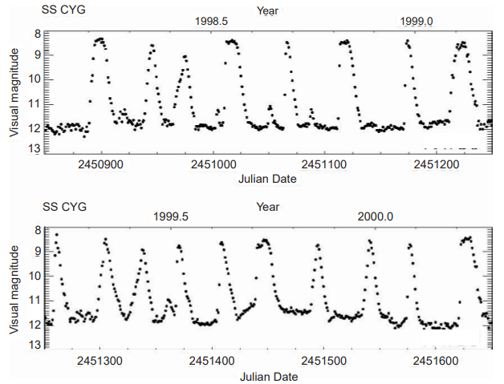
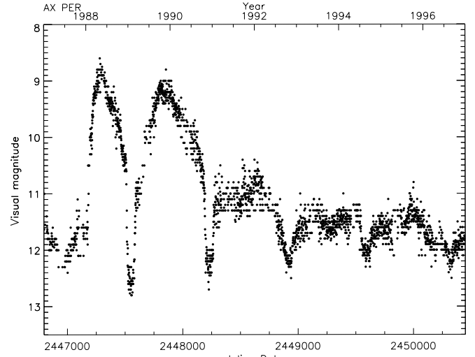

When we look up at the night sky it is easy to imagine that the stars are unchanging. Apart from twinkling due to the effects of our atmosphere, stars appear fixed and constant to the untrained eye. Careful observations, some even done with the naked eye, show that some stars do in fact change in brightness over time. Some exhibit periodic behaviour, brightening quickly and then diminishing slowly, only to repeat themselves. With some, these changes take place over several days, whilst others occur in a matter of hours or many months. Other stars exhibit a once-off dramatic change in brightness by orders of magnitude before fading into obscurity.
All of these are examples of what are termed variable stars. A variable star is simply one whose brightness (or other physical property such as radius or spectral type) changes over time. At a fundamental level, all stars are variable as they evolve and change over time (from a main sequence star to a red giant, as in the Sun's case). Furthermore, we can infer that all stars are likely to vary their light output to some extent due to phenomena such as sunspots.
Discovery
An ancient Egyptian calendar of lucky and unlucky days composed some 3,200 years ago may be the oldest preserved historical document of the discovery of a variable star, the eclipsing binary Algol. Aboriginal Australians are also known to have observed the variability of Betelgeuse and Antares, incorporating these brightness changes into narratives that are passed down through oral tradition.
Among modern astronomers, the first variable star was identified in 1638 when Johannes Holwarda noticed that o Ceti (later named Mira) pulsated in a cycle taking 11 months. The star had previously been described as a nova by David Fabricius in 1596. This discovery, combined with the supernovae observed in 1572 and 1604, proved that the starry sky was not eternally invariable as Aristotle and other ancient philosophers had taught. In this way, the discovery of variable stars contributed to the astronomical revolution of the sixteenth and early seventeenth centuries.
The second variable star to be described was the eclipsing variable Algol, by Geminiano Montanari in 1669; John Goodricke gave the correct explanation of its variability in 1784. χ Cygni was identified in 1686 by G. Kirch, then R Hydrae in 1704 by G. D. Maraldi. By 1786, ten variable stars were known. John Goodricke himself discovered δ Cephei and β Lyrae. Since 1850, the number of known variable stars has increased rapidly, especially after 1890, when it became possible to identify variable stars by means of photography.
Certification
Once a variable star has been discovered, it is considered for official ‘certification’. Prior to World War II, this was done by the Commission on Variable Stars of the Astronomische Gesellschaft in Germany. From then until 1952, it was done by a subcommission of the International Astronomical Union (IAU). Since 1952, it has been done by the compilers of the General Catalogue of Variable Stars (GCVS) in the USSR and now in Russia.
The criteria for certification are quite strict in principle: there must be definite evidence of variability; the brightness must be determined reliably; an accurate position must be given; and the type of variability must be known.
Nomenclature
After a variable star is certified, it is given an official name. Name lists of new variable stars are included at regular intervals in the Information Bulletin on Variable Stars, published by the Konkoly Observatory in Hungary on behalf of the IAU Division of Variable Stars. The name lists give alternate designations of the stars and references to the discovery papers.
The standard system of variable star nomenclature was developed by Argelander (see Hoffleit, 1987, for a brief history). Stars that have a Greek-letter name (such as δ Cephei) or a small Roman-letter name (such as g Herculis) keep that name and are listed at the end of the list of variable stars in their constellation in the GCVS. All other stars are designated by one or two capital letters, followed by the genitive case of the constellation's Latin name (such as Cephei or Cygni). The letters are assigned in the order in which the variables are discovered, starting with R, S, ... Z, RR, RS ... RZ, SS, ST ... SZ through to ZZ, then AA ... AZ, through to QZ, omitting J. (The letters A through Q had already been used in the naming of non-variable stars in the newly charted southern constellations.) This system provides 334 designations per constellation; subsequent variables are called V335, V336, etc., followed by the genitive form of the constellation name.
There are many other designations that can be assigned to a variable star, both before and after certification. Variables discovered in large-scale surveys are often designated according to the observatory at which they were discovered. HV, for instance, means ‘Harvard variable’, and BV means ‘Bamberg variable’. The star may already be listed in the Henry Draper Catalogue (HD) or Bright Star Catalogue (BS); stars in the latter catalogue are usually referred to by their HR (Harvard Revised) number. The variable may be designated by its position at a given epoch, either accurately or in a shorthand notation. For example, the Harvard system of designations, used by the AAVSO in its database, is based on the right ascension and declination of the star for the epoch 1900. A finder chart for the variable can be provided; this is especially useful for faint stars in crowded fields such as clusters, the Milky Way, and other galaxies.
Novae may initially be given a special designation, before being given their variable star name, consisting of the constellation and year of discovery: Nova Delphini 1967 (HR Delphini), for instance. There is a special system of nomenclature for supernovae.
Classification

Variable stars fall into two broad families. Intrinsic variables change brightness because of something happening inside the star. Extrinsic variables change brightness because of something outside the star, or because the star rotates.
Intrinsic variables
These are stars that vary their light output, and hence their brightness, by some change within the star itself. They are an extremely important and useful group of stars to astronomers, as they provide a wealth of information about the internal structure of stars and models of stellar evolution. Perhaps their greatest value is the role of some types, such as Cepheids and supernovae, in distance determination. Intrinsic variables are further classified as to whether they exhibit periodic pulsations or are more explosive or eruptive events, as in cataclysmic variables.
Pulsating variables
Pulsating variable stars are intrinsic variables because their variation in brightness is due to a physical change within the star: the periodic expansion and contraction of the surface layers. The star actually increases and decreases in size periodically. The different types of pulsating variables are distinguished by their periods of pulsation and the shapes of their light curves. These in turn are a function of the mass and evolutionary stage of a given star.
Cepheids
Cepheids are yellow supergiant pulsating variable stars that lie in a narrow instability strip in the middle of the H–R diagram. Their temperatures are 6000–8000 K, and their periods are 1–100 days or more. We now know that there are two distinct classes of Cepheids: the classical Cepheids, which are young stars more massive than the Sun, and the Population II Cepheids or W Virginis stars, which are old stars less massive than the Sun.
The first Cepheids to be discovered were η Aquilae (by Edward Pigott on 10 September 1784) and the prototype δ Cephei (by John Goodricke a month later). At that time, the cause of the variability was not clear. A rotational mechanism was first suggested, and in the late nineteenth century the variability was thought to be caused by some form of eclipse. A. Belopolsky discovered in 1894 that δ Cephei showed radial velocity variations with the same period as the brightness variations, and in 1899 Karl Schwarzschild discovered that variations in temperature also occurred. Following theoretical studies of stellar pulsation by August Ritter, Harlow Shapley in 1914 showed that the brightness, temperature, and velocity variations in Cepheids were consistent with radial pulsation (Figure 2).
At about the same time, the relation between period and luminosity was discovered by Henrietta Leavitt, from observations of 25 Cepheids in the Small Magellanic Cloud (part of a study of over 1700 variables in the Clouds). She noted a relation between the period and the apparent brightness which, because all of the stars were at the same distance, reflected the true brightness or luminosity of the stars. Thereafter, much effort went into calibrating this relation, using Cepheids of known distance.

Types of Cepheid variables
Type I: classical Cepheids. These stars take their name from δ Cephei. Most have a period of between 5 and 10 days and an amplitude range of 0.5 to 2.0 magnitudes in visible light. The variations are less pronounced at infrared wavebands. They are 1.5 to 2 magnitudes more luminous than Type II Cepheids. Classical Cepheids follow a well-defined period–luminosity relationship, which allows them to be used as standard candles. They are located on the instability strip of an H–R diagram and are massive supergiant stars.
Type II: W Virginis. Type II Cepheids are named after the first star identified in this group, W Virginis. It has a period of 17.2736 days, a magnitude range of 9.46–10.75, and a spectral class range of F0Ib–G0Ib. W Virginis-type Cepheids are intrinsically less luminous by 1.5 to 2 magnitudes than the Type I classical Cepheids and have typical periods of 12–30 days. As they are older stars, their spectra are characterised by lower metallicities. Type II light curves show a characteristic bump on the decline side, and they have an amplitude range of 0.3–1.2 magnitudes. As with Type I, they display a well-defined period–luminosity relationship and can be used for distance determination.
RV Tauri variables
RV Tauri stars are pulsating yellow supergiant stars whose light curves are characterised by alternating deep and shallow minima. They have spectral types F to G at maximum light, and K to M at minimum. The period from one deep minimum to the next (the ‘double’ or ‘formal’ period) ranges from 30 to 150 days. The complete light amplitudes can reach 3–4 magnitudes in V. RV Tauri stars are executing blue loops from the asymptotic giant branch (AGB), or are in their final transition from the AGB to the white dwarf stage.
RR Lyrae variables
RR Lyrae stars are pulsating variables with periods of 0.1 to 1 day, ranges in V of up to 1.5 magnitudes, spectral types A5 to F5, absolute visual magnitudes of about +0.5, masses about half a solar mass, and low metal abundances Z of 0.00001 to 0.01, depending upon their age. The variability of RR Lyrae itself was discovered by Williamina Fleming around 1900. It has a period of about 0.567 days, which shows small increases and decreases. By 1916, Richard Prager and Harlow Shapley had independently discovered that its light curve was modulated in amplitude and shape in a period of 41 days. They had discovered the Blazhko effect, which remains a mystery even today.
In practice, these stars are defined by their evolutionary state. Having spent most of their lives burning hydrogen in their cores, they have exhausted that fuel and begun to burn helium in the core. Stars in this stage have a wide range of temperatures but a narrow range of luminosities. They therefore occupy a ‘horizontal branch’ in the H–R diagram. If their temperature lies between about 6000 and 7500 K, they are unstable against pulsation. Their narrow range of temperatures and luminosities explains their small range of periods.
Long-period variables (LPVs)
The first pulsating variable discovered was the long-period variable Mira. LPVs are cool red giants or supergiants and have periods of months to years. Their luminosities can range from 10 to 10,000 times that of the Sun. They are further classified according to whether they exhibit regular periodicity, such as the Miras, or more irregular behaviour.
Mira variables. Miras have stable periods of 100–1000 days, with most between 150 and 450 days. The visual amplitudes are greater than 2.5 magnitudes by definition and can be up to ten magnitudes (Figure 3). Being so conspicuous, they are the most numerous variables in the GCVS, but with modern surveys able to detect smaller-amplitude variables more easily, other types are catching up. Miras are highly evolved stars, with masses between about 0.6 and a few solar masses. They have radii of up to several hundred solar radii; if placed in the solar system where the Sun is, they would extend beyond the Earth's orbit! For these stars, however, the concept of ‘radius’ is complicated. The atmosphere is very extended, and the star will look much larger in regions of the spectrum (such as V) at which the atmosphere is opaque. Some Miras are Population I stars, others are Population II; some of the latter are found in globular clusters.

Semiregular variables. As their name implies, these stars show some periodicity and variations in brightness, but also exhibit irregularities where they appear to be stable. They are giant and supergiant stars with periods ranging from a few days to several years, and the change in brightness is typically less than two magnitudes. The light curves of semiregulars have a variety of shapes. Prominent examples include Antares (α Scorpii) and Betelgeuse (α Orionis).

| Type | Period | Notes |
|---|---|---|
| Classical Cepheids | Mostly 5–10 days | Young, massive supergiants. Follow a period–luminosity relation |
| Type II Cepheids (W Virginis) | Typically 12–30 days | Older and fainter than classical Cepheids. Bump on the decline |
| RR Lyrae | 0.1–1 day | Horizontal branch stars burning helium in the core |
| RV Tauri | 30–150 days (double period) | Alternating deep and shallow minima |
| Mira | 100–1000 days | Cool red giants. Amplitudes up to ten magnitudes |
| Semiregular | A few days to several years | Giants and supergiants. Amplitude usually under two magnitudes |
Why do stars pulsate?
We tend to think of stars as stable and unchanging. Stars undergo several stages in their existence, but main sequence stars such as our Sun are basically stable, exhibiting no dramatic changes in size or brightness. They are in what is called hydrostatic equilibrium: the gravitational force pulling the star's material inwards is balanced by the radiation pressure and the gas pressure. The radiation pressure acts outwards and arises from the production of photons in the core by fusion. Gas pressure is much the same as any gas on Earth resisting attempts to compress it.
Why then do some stars pulsate? Despite what you might think, pulsation is not due to increased radiation pressure from higher rates of fusion in the core. The rate of fusion remains constant. Pulsations instead arise from variations in the rate at which radiation can escape from the star. The steps involved are:
- If the outward pressure exceeds the inward gravitational force, the outer layers of the star expand outwards.
- As the star expands, its inward gravitational force diminishes, but its outward pressure drops at an even greater rate (think of what happens to a gas as it expands).
- Eventually the star reaches a position at which hydrostatic equilibrium occurs: gravity equals pressure. However, the outward-moving layers still have momentum, so they resist a change in motion. This momentum carries the layer past the equilibrium position.
- The gravitational force acts on the layer and slows it down. A point is reached where it stops, but now the outward gas and radiation pressure is weaker than the inward-acting gravitational force.
- The imbalance of forces causes the star's outer layers to collapse inwards.
- As the layers collapse, gravity increases, but the pressure increases at a greater rate.
- With the outward pressure exceeding the inward gravitational force, the collapsing layer slows down and eventually stops.
- We are now back at the start, where the outward pressure is greater than gravity, so the pulsation cycle begins again.
A pulsating star is thus not in equilibrium but is always trying to regain it, shooting past the point each time. It is a harmonic oscillator. Analysis of light curves comprising many periods can often reveal more than one harmonic mode of oscillation for some types of pulsating variable. This information in turn allows astronomers to learn more about the interiors of those stars, in much the same way as the analysis of seismic waves helps geologists probe the Earth's interior.
Eruptive or cataclysmic variables
Eruptive variables can exhibit significant and rapid changes in luminosity due to violent outbursts caused by processes within the star. There is a wide variety of them. Some events, as the term cataclysmic implies, result in the destruction of the star, whilst others can recur one or more times.
Supernovae
A supernova is a star which, within a few days, brightens by 10 to 20 magnitudes, reaching a peak absolute magnitude of −15 to −20 or brighter, then slowly fades. In the process, the star is irreversibly transformed into a rapidly expanding shell (a supernova remnant) and/or a collapsed core: a neutron star or possibly a black hole. Despite a superficial resemblance between novae and supernovae, the eruption mechanism and the consequences are totally different. A supernova explosion ‘is forever’.
Supernovae are caused by one of two main mechanisms. The first takes place when accreting material falling onto a white dwarf in a binary system takes it over the mass set by the Chandrasekhar limit. The resulting instability triggers a runaway thermonuclear explosion that destroys the star and releases large amounts of radioactive and heavy elements into space. The second occurs in very massive stars once all the material in their core has been fused into iron. As fusion cannot occur in elements heavier than iron, the drop in outward radiation pressure means that gravitational collapse overwhelms the core, which rapidly implodes. The core material gets crushed to form degenerate neutron-density material, whilst the extreme temperature and pressure in the surrounding layers cause rapid (r-process) nuclear reactions that synthesise the heaviest elements. A huge flux of neutrinos is thought to interact with the superdense material, ripping the star apart. Such core-collapse supernovae may result in neutron stars and black holes forming from the remaining core material.
Observationally, supernovae are classified according to their spectra. Type I supernovae exhibit no hydrogen lines in spectra taken soon after the event. Those with silicon lines present are further classified as Type Ia and are thought to be due to thermonuclear explosions of accreting white dwarfs. If no Si lines are present, they are Type Ib or Ic, depending on the high or low abundance of He lines respectively. These types occur due to core collapse following the stripping away of the outer layers in Wolf–Rayet or binary stars.
Type II supernovae show hydrogen lines in their early spectra. They are all examples of core-collapse events, most arising from a massive progenitor star exhausting its core fuel. Perhaps the best-known example is Supernova 1987A, the first supernova visible to the naked eye since Kepler's supernova of 1604. It took place in the Large Magellanic Cloud, a satellite galaxy of our own about 50,000 pc distant. Although we expect two or three stars to go supernova in our galaxy each century, these may not be visible in optical wavebands due to absorption and scattering by the galaxy's dust lanes, so the occurrence of a supernova in a nearby galaxy was a major boon for astronomers. Observations of SN 1987A continue today at many wavebands.
Novae
A nova occurs in a close binary system and is characterised by a rapid and unpredictable rise in brightness of 7–16 magnitudes within a few days. The eruption is followed by a steady decline back to the pre-nova magnitude over a few months. This suggests that the event causing the nova does not destroy the original star. Our model for novae is that of an accreting white dwarf. It draws material off its close binary companion for about 10,000 to 100,000 years until there is sufficient material to trigger a thermonuclear explosion that blasts the shell of material off into space. Nova Aquilae 1918 (V603 Aquilae), at its brightest, was outshone only by Sirius. Novae thus look like a ‘new star’, hence the name nova, meaning new.
Most galactic novae belong to intermediate or old Population I, but that is a biased sample. One of the most complete extragalactic samples is that of Neill and Shara (2004) for M81; it clearly shows that the M81 novae are primarily Population II. A few galactic novae have been identified in globular clusters and are therefore also Population II.
Novae are designated by their constellation and year of discovery, and later receive an official variable star designation; Nova Cygni 1975 is also V1500 Cygni.

Recurrent novae
Recurrent novae are novae that are known to have erupted more than once. They have a change in magnitude of 7–16 and a period of outburst of up to about 200 days.

Dwarf novae
Dwarf novae (DNe) are defined as hot dwarf variables that suddenly brighten by up to six magnitudes. They do so repeatedly, at irregular intervals of a few weeks. Three subtypes are identified: U Geminorum, Z Camelopardalis, and SU Ursae Majoris stars. As with other types of variables, the class name is normally based on the first such star discovered, so the U Geminorum type is named after the star U Geminorum.
As with other types of novae, dwarf novae are close binaries with a white dwarf as one of the component stars. The most popular model explaining their outbursts is the disk instability model, in which thermal instabilities in the accretion disk cause outbursts but no explosion. There is no significant ejection of material in these events.

Symbiotic stars
A symbiotic star is one whose spectrum shows the simultaneous presence of features from a cool star (such as absorption lines from molecules) and from a hot object (such as high-excitation emission lines). Observed at short wavelengths, they appear as hot stars; observed at longer (near-infrared) wavelengths, they appear as cool stars! The first examples (CI Cygni, RW Hydrae, and AX Persei) were noted in 1932. Symbiotic stars turn out to be binary systems consisting of a cool giant (usually M type) and either a hot main sequence star or, more usually, a white dwarf with an accretion disc. There is a tendency to include in this class any interacting binary with a hot component and a cool one, which certainly complicates the discussion. Variable symbiotic stars (and almost all of them are variable) are called Z Andromedae stars. The variability of this star was discovered around 1900.
There is also an interesting class of symbiotic novae: eruptive variables consisting of a red giant (often a pulsating variable) and a hot, compact object, usually a white dwarf. They erupt every few centuries, then decline over a period of years to decades.

R Coronae Borealis stars
Unlike most variable stars, R Coronae Borealis stars spend most of their time at maximum brightness, but sometimes decrease in brightness by up to 9 magnitudes at irregular intervals. They then take a few months or a year to return to their normal maximum brightness. These rare stars are carbon-rich.
Extrinsic variables
Extrinsic variables are those in which the light output varies either due to processes external to the star itself, or due to the rotation of the star. The two main classes are eclipsing binaries and rotating variables.
Eclipsing binaries
Eclipsing variables are binary stars in which the observer sees the orbit almost edge-on. One star periodically eclipses the other, and at these times the total brightness of the pair decreases. The brightness change is a geometrical effect; there is not necessarily any physical or intrinsic change in the stars. (In close binary stars, however, there may be.)
Binary stars are of interest for several reasons. First, at least half of all stars are binary or multiple stars, so they are a normal occurrence in our universe. At least 3 percent of bright stars are eclipsing variables, based on the sample of the 300 brightest stars. Eclipsing binaries are also of interest because they normally consist of stars in close orbit. If the stars were far from each other, eclipses could be seen only if the observer was almost exactly in the orbit plane, which would be unlikely. If the stars are close to each other, the observer can be further from the orbit plane and eclipses can still be seen. Stars close to each other will also exert tidal forces, distorting each other's shape and possibly pulling material from one star to another.
Classification of eclipsing binaries. As with other types of variable stars, the traditional classification scheme for eclipsing variables is based on the outward appearance of the light curves, which reflects the presence or absence of the complications discussed above. At one time, any variable star with brief minima was suspected to be an eclipsing variable. The GCVS still recognises the following classes:
- Algol (EA in the GCVS) has light curves with almost flat maxima; the stars are almost undistorted.
- Beta Lyrae (EB in the GCVS) variables have light curves that are slightly rounded; the stars are distorted into ellipsoids.
- W Ursae Majoris (EW in the GCVS) variables have light curves which vary continuously; the stars are essentially in contact. The periods are short, generally less than a day, the minima are approximately equal in depth (a few tenths of a magnitude), and the stars are usually F to G type or later.
This classification is almost obsolete, and is rather misleading. Beta Lyrae is so bizarre that it should not be a prototype for any class. The EA and EW stars do, however, represent two ends of a spectrum. Algol binaries are now recognised as semi-detached systems, whereas they used to be considered together with detached binaries. EA is now taken to mean ‘detached’ and EB is associated with ‘semi-detached’.
Modern classification of eclipsing variables (and binary stars in general) is based on the concept of Lagrangian surfaces and Roche lobes. Binaries can thus be classified as follows:
- Detached binaries: both components are well within their Roche lobes. Tidal distortion is minimal, and the stars are almost spherical. The masses, radii, and temperatures can be determined reliably from eclipse light curves and from radial velocities.
- Semi-detached binaries (SD in the GCVS4): one component fills its Roche lobe; the other is well within its Roche lobe. The former star is distorted and is probably losing mass through the inner Lagrangian point; the latter star is almost spherical.
- Contact binaries (K in the GCVS4): both components fill their Roche lobes and are essentially in contact. There may also be a common envelope of material surrounding the two stars, blurring their individual identities. In that case, they are referred to as over-contact binaries. The GCVS4 subclassifies them as hot (KE) or cool (KW).
Rotating variables
Only in theory are stars bland, featureless spheres. In the case of the Sun, we can directly observe its complex, ever-changing surface: sunspots, flares, magnetic fields, low-level pulsation, and seething convection cells, which are bubbles of rising and falling gas. On other stars we cannot ‘see’ the appearance, but we can deduce it.
As the star rotates, regions of different brightness (and colour, and magnetic field strength, and other properties) will pass into the observer's field of view, and these properties will appear to vary. The period of variation is the period of rotation. Since all stars rotate, any star with a patchy surface will be a rotating variable, unless the patches are symmetrical about the axis of rotation, or unless the axis of rotation points at the observer. The variations will be both photometric and spectroscopic.
There are two especially important and interesting groups of rotating variable stars: peculiar A (Ap) stars and their relatives, and sunlike stars with starspots. The Ap stars have global, approximately dipole magnetic fields, like the Earth. Sunlike stars have magnetic fields which are concentrated primarily in small regions called starspots, though the Sun does have a weak global magnetic field of about one gauss.
Key takeaways
What to remember
- A variable star is one whose brightness (or another property) changes over time. Intrinsic variables change from within. Extrinsic variables change from outside, or by rotating.
- Pulsating variables swell and shrink in a cycle. Cepheids obey a period–luminosity relation, so they act as standard candles for measuring distance.
- Eruptive variables, such as novae and supernovae, change brightness in violent outbursts. Novae do not destroy the star, but supernovae do.
- Eclipsing binaries dim when one star passes in front of the other, which lets astronomers measure their masses and sizes.
References
- John R. Percy, Understanding Variable Stars
- CSIRO Australia Telescope National Facility
- Wikipedia: Variable star